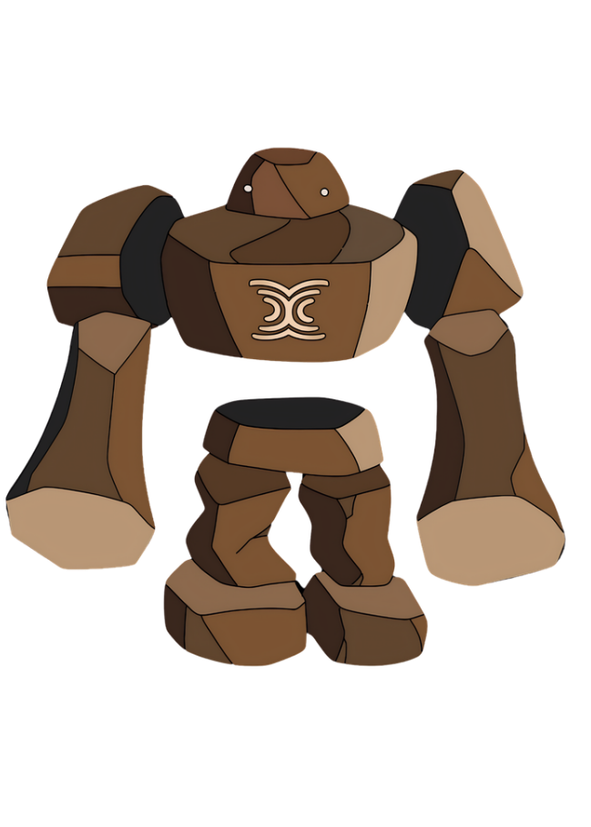

◉
Transparency
Public execution makes verification possible, but can expose sensitive inputs and state to everyone observing the chain.
Explore how Seismic approaches confidential smart contracts — and learn where privacy can still leak through application design.
Independent educational project · Fictional examples only · No network connection

On transparent blockchains, transaction inputs and contract state can reveal business logic, balances, strategies, and user behavior. Privacy is not a single switch: it is a system property shaped by execution, data handling, and application choices.
Public execution makes verification possible, but can expose sensitive inputs and state to everyone observing the chain.
Confidential computation aims to protect selected values while preserving useful on-chain behavior.
Developers need familiar contract patterns and explicit control over which values are public or shielded.
Seismic combines changes across the developer toolchain, transaction format, execution environment, and state handling. The exact guarantees depend on the implementation and threat model.
A modified Solidity toolchain introduces shielded types such as suint256 and sbool.
A Seismic transaction type can carry encrypted calldata rather than ordinary plaintext inputs.
Trusted Execution Environments, including Intel TDX-based infrastructure, support confidential processing.
Dedicated operations such as CLOAD and CSTORE support protected state access.
Explore common patterns that can leak information even when sensitive values use shielded types. These are simplified, fictional demonstrations — not live chain simulations.
If execution takes measurably different paths depending on a shielded value, gas usage may reveal information about that value.
Safer direction: avoid secret-dependent public control flow where possible; use constant-work designs and review observable execution behavior.
A conventional eth_call is a simulation request and may not prove the identity of the reader. Seismic Signed Reads are designed to authenticate the requester and allow a response to be encrypted to the client's key.
Implementation details and supported flows should always be checked against the current official documentation.
The documented flow uses established cryptographic primitives for key agreement, key derivation, and authenticated encryption.
Elliptic-curve Diffie–Hellman allows two parties to derive a shared secret using their key material.
HKDF derives purpose-specific cryptographic key material from the shared secret and context.
AES-GCM encrypts data and authenticates it, detecting unauthorized modification of ciphertext.
Compare an ordinary transaction with a conceptual shielded transaction. All values are fictional and simulated locally.
Local demonstration only. No wallet, blockchain or network connection.
Choose a vulnerability to inspect what may leak, what an observer can infer, and how to reduce exposure.
Educational model only. No Solidity compilation, gas measurement, cryptographic computation, wallet, or network connection occurs here.
A short knowledge check. The examples are conceptual and use no real accounts, keys, or transactions.
Confidential execution can reduce exposure of selected data, but it does not automatically hide every observable signal or eliminate every security risk.
Depending on the protocol and transaction path, details such as sender address, gas usage, target contract, timing, and transaction relationships may still be observable.
TEEs introduce hardware, firmware, side-channel, configuration, and operational trust assumptions. They reduce some risks; they do not erase the need for audits and careful threat modeling.
Protocol details evolve. Use the official documentation and source repositories as the authority for current behavior.
Hi! I’m Rocky. Pick a section and I’ll help you understand its key idea.
LEARNING GUIDE